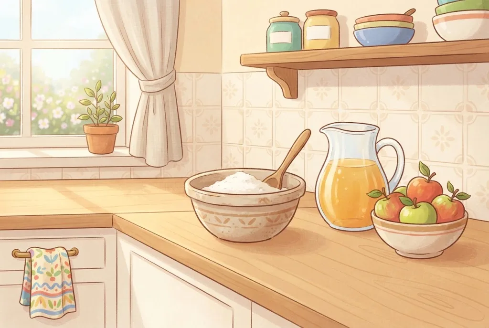
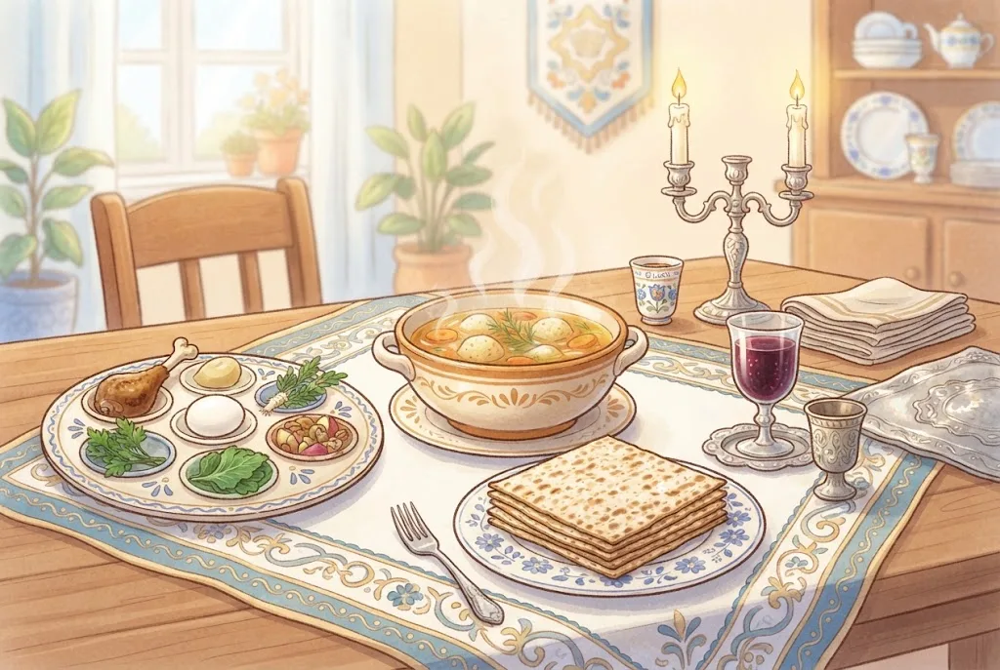

🧁מַצָּה עֲשִׁירָה
בָּצֵק שֶׁנִּלּוֹשׁ בְּמִיץ פֵּרוֹת, יַיִן, חָלָב, שֶׁמֶן אוֹ בֵּיצִים – בְּלִי מַיִם – אֵינוֹ חָמֵץ, וְנִקְרָא ״מַצָּה עֲשִׁירָה״. אֲבָל בְּלֵיל הַסֵּדֶר אֵין יוֹצְאִים בָּהּ, כִּי הַמַּצָּה צְרִיכָה לִהְיוֹת ״לֶחֶם עֹנִי״. וְאִם נִתְעָרְבוּ בַּמִּיץ מְעַט מַיִם – הַבָּצֵק יָכוֹל לְהַחְמִיץ.
לְמִנְהַג הָאַשְׁכְּנַזִּים – לֹא אוֹכְלִים מַצָּה עֲשִׁירָה בְּפֶסַח, חוּץ מֵחוֹלֶה אוֹ זָקֵן שֶׁצְּרִיכִים. לְמִנְהַג הַסְּפָרַדִּים – מִן הַדִּין הִיא מֻתֶּרֶת, אֲבָל רַבִּים מֵהֶם מַחְמִירִים הַיּוֹם, כִּי בְּדֶרֶךְ כְּלָל מוֹסִיפִים לַמִּיץ מַיִם.
💛 אַהֲבַת הַשֵּׁם: גַּם בְּמַה שֶּׁמֻּתָּר מִן הַדִּין, עַם יִשְׂרָאֵל מוֹסִיף זְהִירוּת – כִּי הוּא אוֹהֵב אֶת מִצְוַת הַפֶּסַח וְרוֹצֶה לְקַיֵּם אוֹתָהּ בִּשְׁלֵמוּת.
🔀שְׁנֵי מִנְהָגִים – וּשְׁנֵיהֶם כַּהֲלָכָה
בְּהִלְכוֹת פֶּסַח הַסְּפָרַדִּים נוֹהֲגִים בְּדֶרֶךְ כְּלָל כְּפִסְקֵי הַשֻּׁלְחָן עָרוּךְ, שֶׁהוֹלֵךְ לְפִי כְּלָלֵי הַהֲלָכָה, וְהָאַשְׁכְּנַזִּים כְּפִסְקֵי הָרָמָ״א, שֶׁחוֹשֵׁשׁ לְכַתְּחִלָּה גַּם לְדַעַת הַמַּחְמִירִים. לָכֵן: קִטְנִיּוֹת – הַסְּפָרַדִּים אוֹכְלִים, וְהָאַשְׁכְּנַזִּים לֹא. מַצָּה עֲשִׁירָה – לַסְּפָרַדִּים מֻתֶּרֶת מִן הַדִּין, וְהָאַשְׁכְּנַזִּים לֹא אוֹכְלִים.
גַּם בֵּין הַסְּפָרַדִּים יֵשׁ שֶׁמַּחְמִירִים – בְּאֹרֶז וּבְמַצָּה עֲשִׁירָה. וְכָל אֶחָד מַמְשִׁיךְ בְּמִנְהַג אֲבוֹתָיו.
💛 אַהֲבַת הַשֵּׁם: שְׁנֵי הַמִּנְהָגִים בְּנוּיִים עַל דִּבְרֵי גְּדוֹלֵי הַפּוֹסְקִים. כְּשֶׁאָנוּ מְכַבְּדִים אֶת הַמִּנְהָג שֶׁל הֶחָבֵר, כָּל עַם יִשְׂרָאֵל חוֹגֵג יַחַד אֶת הַפֶּסַח – כְּמִשְׁפָּחָה אַחַת.
🥣מַצָּה שְׁרוּיָה
מַצָּה שֶׁנֶּאֶפְתָה הֵיטֵב כְּבָר אֵינָהּ יְכוֹלָה לְהַחְמִיץ – גַּם אִם מַשְׁרִים אוֹתָהּ בְּמַיִם זְמַן רַב. לָכֵן מֻתָּר לָשִׂים מַצָּה בְּמָרָק, וּלְהָכִין מִקֶּמַח מַצָּה עוּגוֹת וּקְנֵידְלַאךְ. כָּךְ נוֹהֲגִים רֹב עוֹלֵי סְפָרַד וְאַשְׁכְּנַז.
הַחֲסִידִים, תַּלְמִידֵי הַבַּעַל שֵׁם טוֹב, נָהֲגוּ לְהַחְמִיר וְלֹא לֶאֱכֹל מַצָּה שְׁרוּיָה. אֵין לְזַלְזֵל בְּמִנְהָגָם.
💛 אַהֲבַת הַשֵּׁם: כְּשֶׁיֵּשׁ מִי שֶׁמַּחְמִיר עַל עַצְמוֹ, מְכַבְּדִים אוֹתוֹ בְּאַהֲבָה. כָּל אֶחָד מִשְׁתַּדֵּל לְהַדֵּר בְּדַרְכּוֹ בְּמִצְווֹת הַפֶּסַח.
🔀עוֹד מִנְהָגִים וְדֵעוֹת בְּפֶסַח
מַצָּה שְׁרוּיָה: רֹב יִשְׂרָאֵל אוֹכְלִים, וְהַחֲסִידִים נוֹהֲגִים שֶׁלֹּא. בּוֹטְנִים: בִּירוּשָׁלַיִם וּבִמְקוֹמוֹת רַבִּים נִמְנְעוּ מֵהֶם, וּבְלִיטָא אָכְלוּ. קִינוֹאָה: יֵשׁ מַחְמִירִים, וְיֵשׁ מְקִלִּים – וְהָעִקָּר כַּמְּקִלִּים, אִם בּוֹרְרִים הֵיטֵב.
קֶרֶם, בֹּשֶׂם וּשְׂפָתוֹן בְּלִי טַעַם: הָרַב מֶלָמֵד פּוֹסֵק שֶׁאֵינָם צְרִיכִים כַּשְׁרוּת לְפֶסַח, וְיֵשׁ מַחְמִירִים לִקְנוֹתָם עִם כַּשְׁרוּת. וְחָמֵץ שֶׁנִּמְכַּר: רֹב הַפּוֹסְקִים מַתִּירִים לֶאֱכֹל מִמֶּנּוּ אַחֲרֵי פֶּסַח, וְיֵשׁ נוֹהֲגִים לְהַחְמִיר.
💛 אַהֲבַת הַשֵּׁם: כָּל מִנְהָג שֶׁל עַם יִשְׂרָאֵל בָּנוּי עַל דִּבְרֵי חֲכָמִים וְעַל אַהֲבַת הַמִּצְוָה. מִי שֶׁמַּכִּיר אֶת הַמִּנְהָגִים – מְכַבֵּד אֶת כֻּלָּם.
🏷️כָּשֵׁר לְפֶסַח
מַאֲכָל שֶׁיֻּצַּר בְּבֵית חֲרֹשֶׁת אוֹכְלִים בְּפֶסַח רַק אִם יֵשׁ עָלָיו חוֹתֶמֶת כַּשְׁרוּת לְפֶסַח – כִּי כָּל מוּצָר עָשׂוּי מֵהַרְבֵּה חֳמָרִים, וְאוּלַי אֶחָד מֵהֶם אֵינוֹ כָּשֵׁר לְפֶסַח. גַּם בָּשָׂר אָרוּז צָרִיךְ חוֹתֶמֶת לְפֶסַח, שֶׁלֹּא יִפְּלוּ לְתוֹכוֹ פֵּרוּרֵי חָמֵץ.
בֵּיצִים שֶׁהֻטְּלוּ לִפְנֵי פֶּסַח – אֵין בָּהֶן שׁוּם חֲשָׁשׁ, וְיֵשׁ הִדּוּר לִקְנוֹת אוֹתָן לִפְנֵי הֶחָג.
💛 אַהֲבַת הַשֵּׁם: כְּשֶׁאֲנַחְנוּ בּוֹדְקִים כָּל חֲבִילָה, אֲנַחְנוּ מַרְאִים שֶׁהַמִּצְוָה חֲשׁוּבָה לָנוּ גַּם בַּפְּרָטִים הַקְּטַנִּים.
🐕״נִפְסַל מֵאֲכִילַת כֶּלֶב״
חָמֵץ שֶׁנִּפְסַל לִפְנֵי פֶּסַח, עַד שֶׁאֲפִלּוּ כֶּלֶב לֹא יֹאכַל אוֹתוֹ – אֵין עָלָיו יוֹתֵר דִּין חָמֵץ. לָכֵן גְּלוּלָה מָרָה וְחָמְרֵי נִקּוּי – מֻתָּרִים. אֲבָל מוּצְרֵי מָזוֹן מִבֵּית חֲרֹשֶׁת אוֹכְלִים רַק עִם חוֹתֶמֶת כַּשְׁרוּת לְפֶסַח.
תְּרוּפָה טְעִימָה, כְּמוֹ סִירוֹפּ, רְאוּיָה לַאֲכִילָה – וְלָכֵן צָרִיךְ לְבָרֵר שֶׁהִיא כְּשֵׁרָה לְפֶסַח.
💛 אַהֲבַת הַשֵּׁם: הַהֲלָכָה מְדַיֶּקֶת: מַה שֶּׁרָאוּי לַאֲכִילָה – נִזְהָרִים בּוֹ מְאוֹד, וּמַה שֶּׁאֵינוֹ אֹכֶל כְּלָל – לֹא מַטְרִיחִים עָלָיו. כָּךְ הַתּוֹרָה שׁוֹמֶרֶת עָלֵינוּ וְגַם מְקִלָּה עָלֵינוּ.

💊תְּרוּפוֹת בְּפֶסַח
תְּרוּפָה טְעִימָה – כְּמוֹ סִירוֹפּ אוֹ גְּלוּלָה לִמְצִיצָה – צְרִיכָה כַּשְׁרוּת לְפֶסַח. אֲבָל גְּלוּלָה מָרָה אוֹ חַסְרַת טַעַם, שֶׁבּוֹלְעִים אוֹתָהּ – מֻתָּר לִבְלֹעַ בְּפֶסַח בְּלִי לְבָרֵר. גַּם אִם יֵשׁ בָּהּ חָמֵץ, הוּא נִפְסַל מֵאֲכִילַת כֶּלֶב לִפְנֵי פֶּסַח.
חוֹלֶה מְסֻכָּן שֶׁהַתְּרוּפָה שֶׁלּוֹ הִיא חָמֵץ – מִצְוָה עָלָיו לָקַחַת אוֹתָהּ, כִּי פִּקּוּחַ נֶפֶשׁ דּוֹחֶה אֶת אִסּוּר הֶחָמֵץ.
💛 אַהֲבַת הַשֵּׁם: הַתּוֹרָה נִתְּנָה לְחַיִּים. ה׳ רוֹצֶה שֶׁנִּשְׁמֹר עַל הַבְּרִיאוּת שֶׁלָּנוּ – גַּם בְּפֶסַח.
🪥מִשְׁחַת שִׁנַּיִם, קֶרֶם וְסַבּוֹן
מִשְׁחַת שִׁנַּיִם צְרִיכָה כַּשְׁרוּת לְפֶסַח, כִּי יֵשׁ לָהּ טַעַם. קֶרֶם, בֹּשֶׂם וּשְׂפָתוֹן בְּלִי טַעַם – הַהֲלָכָה כַּמְּקִלִּים שֶׁאֵינָם צְרִיכִים כַּשְׁרוּת, וְיֵשׁ מַחְמִירִים. בְּסַבּוֹן וְשַׁמְפּוֹ יֵשׁ עוֹד יוֹתֵר מָקוֹם לְהָקֵל.
חָמְרֵי נִקּוּי, מִשְׁחַת נַעֲלַיִם, כּוֹסוֹת נְיָר וּנְיַר אֲפִיָּה – אֵינָם צְרִיכִים שׁוּם הַשְׁגָּחָה.
💛 אַהֲבַת הַשֵּׁם: הַהֲלָכָה יוֹדַעַת לְהַבְחִין בֵּין מָה שֶׁחָשׁוּב בֶּאֱמֶת לְבֵין חֲשָׁשׁוֹת מְיֻתָּרִים. כָּךְ שׁוֹמְרִים עַל הֶחָג – בְּשִׂמְחָה וּבְלִי לַחַץ.
🧠 בְּדֹק אֶת עַצְמְךָ
עוּגָה מִקֶּמַח חִטָּה נִלּוֹשָׁה רַק בְּמִיץ תַּפּוּחִים, בְּלִי טִפַּת מַיִם. מָה נָכוֹן?
💡 מִיץ פֵּרוֹת בְּלִי מַיִם אֵינוֹ מַחְמִיץ. הָאַשְׁכְּנַזִּים נוֹהֲגִים לֹא לֶאֱכֹל מַצָּה עֲשִׁירָה (חוּץ מֵחוֹלֶה אוֹ זָקֵן), וּלְמִנְהַג הַסְּפָרַדִּים הִיא מֻתֶּרֶת מִן הַדִּין – וְרַבִּים מֵהֶם מַחְמִירִים הַיּוֹם, כִּי מוֹסִיפִים לַמִּיץ מַיִם.
מֻתָּר לָשִׂים מַצָּה בְּתוֹךְ מָרָק חַם בְּפֶסַח?
💡 אַחֲרֵי שֶׁהַמַּצָּה נֶאֶפְתָה הֵיטֵב, כֹּחַ הַחִמּוּץ שֶׁבַּקֶּמַח בָּטֵל, וְכָךְ נוֹהֲגִים רֹב יִשְׂרָאֵל. הַחֲסִידִים נָהֲגוּ לְהַחְמִיר שֶׁלֹּא לֶאֱכֹל מַצָּה שְׁרוּיָה, וְאֵין לְזַלְזֵל בְּמִנְהָגָם.
📚 עוֹד חָמְרֵי לִמּוּד עַל הֲלָכָה – חִנָּם, בַּמַּאֲגָר הַקּוֹל הַחֲמִישִׁי:
kol-toda.co.il/halacha
הַמַּאֲגָר הַמָּלֵא: kol-toda.co.il
הַמַּאֲגָר הַמָּלֵא: kol-toda.co.il